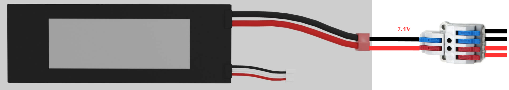

Electric Wiring Guide
Color coding the positive and negative power lines is extremely recommended.
1 Split Battery Power
The LiPo battery will provide power for all the electric components. A wire splitter is employed to separate the power for the drivetrain from the electronics devices.

2 Powering Drivetrain
A 3-wire servo motor is responsible for turning the front wheels of the BearCart.
There are two widely used color codes for the servo wires.
Please refer to the following table for details:

Most hobby servos are rated from 4.8 to 6 volts.
We convert the battery power to 5 volts to feed the need of the servo motor.

3 Powering Up Motor Driver
Pay attention to the polarity of the power port (labeled with "+" and "-")

4 Powering Up Raspberry Pi
- A Raspberry Pi can be powered up from a '5V' (positive) and a 'GND' (negative) pin among the GPIO pins.
- Apply a power source over 5 volts may damage the Raspberry Pi.

5 GPIO Wiring
- Raspberry Pi is in charge of controlling the steering servo and thrust motor.
- The control signals are handled by some of the GPIO pins.
- The GPIO pins employed as shown in the diagram below are the default setting. Other GPIO pins can be used.

TODO
- LED wiring